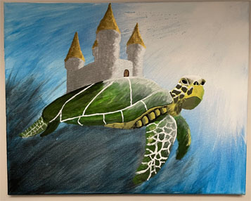

A Little Bit About Me
Hi, my name is Daniel Martens and I'm a student at Red River College. I'm creating this website for a project in web development 1 but also as a portfolio to showcase my proficiency in web development, programming, database management, and system analysis.
In the past I've performed many physical jobs such as construction, plumbing, HVAC, gas piping, pest control, and truck driving.
Some hobbies that I fill my free time with include playing guitar, singing, exercising, cooking, reading, watching YouTube videos, thinking about philosophy, and painting things like this turtle with a castle on it's back.
